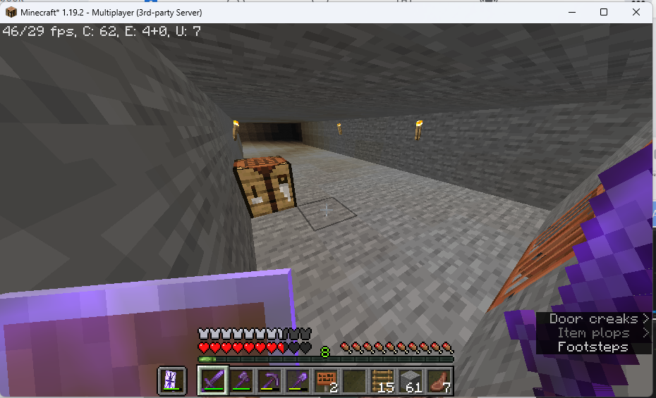

Base64 Lore
The server was built by "kirioalt" The "Cleansers" is "kirioalt" team. Cleaners are those that remove threats from the "base64" server. Team "Cleansers" members include: kirioalt (owner) Apart (Sergeant I) Takina (Sergeant II) The narrative begins. The story of Base64 begins when kirioalt and Takina play the game. It's what any normal person would do. Collect some wood and stones. and built the first base.
following that. Apart was welcomed. The server had a number of completions from Apart. comparable to being the first member of the Cleansers being the second person to receive a whole enchanted netherite Apart obtained it from Kirioalt. After that, Kirioalt founded the "Cleansers" team. Apart was invited separately from the "Cleansers" crew. You must be killed by Kirioalt using the "Joined Cleansers" Sword in order to be join the team. such as this one.

After Apart being a Cleanser. A base dubbed "Yuan Hotel" was built by Apart. Here are pictures of the Yuan Hotel: